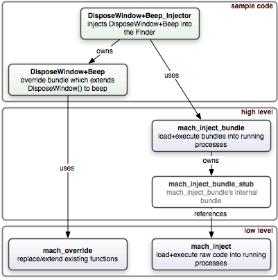

mach_star is an open-source code suite for suppressing, replacing and/or extending Mac OS X functionality at a very low level. Its principal components are mach_override (replace and/or extend existing functions at runtime) and mach_inject (dynamically load your code into a running process). If you’re new to mach_star, be sure to check out the documentation and project layout to get the lay of the land.
mach_star 1.2 (Sun Dec 25 2005) download ⇒
New API function: mach_override_ptr(). Use it to override by function address (instead of C-string function symbol name).
mach_override() now uses mach_override_ptr() under the hood. The practical difference is that mach_override() will now assert()+die when a symbol can’t be found, instead of NULL-deference+die. Meh, it should actually return an error.
Merry Christmas!
Add test_mach_override.[ch] which exercises mach_override and screams if it fails. First baby step in covering this code in tests. Right now it covers overriding+reentry of local functions by pointer and overriding+reentry of system functions by pointer and name. For completeness sake, it should also test just overriding (wholesale replacement, sans reentry). The test is a little weird, I have to introduce a level of indirection (function pointers) to get past gcc’s optimizer (see Design note: in test_mach_override.h for details).
mach_star 1.1.1 (Sun Dec 18 2005) download ⇒
General Xcode 2.2 project cleanup. mach_star now includes .xcodeproj Xcode 2.2 project files for all of its projects. The old .xcode project files have been left in place, but they aren’t maintained and may not work. Xcode 2.2 is the recommended mach_star development environment — Xcode 2.1 had a bug with inter-project dependancies which would cause compilation failure. It works now again in Xcode 2.2.
Inter-project dependancies should working under Xcode 2.2. Any project you pick, you should just be able to hit the “Build” button and everything should Just Work™.
There was a stray reference to my username in one of the project, which causes compilation headaches for some folks.
Bug fix: in mach_inject_bundle.c’s mach_inject_bundle_pid() I no longer call CFRelease() on the framework bundle reference. Reported by Scott Kevill.
Added some explicit casts now required by gcc 4.
Added this document.
mach_star 1.1 (Wed Apr 06 2005) download ⇒
New package added: mach_inject_bundle. It has a private subproject: mach_inject_bundle_stub. The stub is a generic reusable implementation of the code that gets squirted across the address spaces, which was always tricky to write. mach_inject_bundle is an embeddable framework that wraps mach_inject and the stub with a simple fire-and-forget API.
The “DisposeWindowBeeperOverride” example is replaced by “DisposeWindow+Beep”.
The “FinderDisposeWindowBeeperInjector” is replaced by “DisposeWindow+Beep_Injector”.
All the text is now wrapped to 80 chars wide. Done to print nicely in Scott Knaster’s Hacking Mac OS X Tiger. Probably will undo this word-wrap in the future. We all have widescreens nowadays, right? ;-)
Thanks to Jon Gotow for letting me peek at SCPatch, which I used as a guide for mach_inject_bundle. It saved me a bunch of time. Also thanks to Bob Ippolito for CALL_ON_LOAD assistance.
mach_star 1.0 (Wed Jun 18 2003) ⇒
Rough timeline:
mach_inject_bundle_stub’s use of CALL_ON_LOAD now trips a deprecation warning. I’m currently unwilling to sacrifice backwards compatibility to silence this warning.
Unless it’s sensitive, it’s your best interest to send questions, comments, suggestions and patches concerning mach_star to the public extendamac-macosx mailing list. The community has better latency than I do.
If you want to understand how mach_star works underneath the covers, my MacHack 2003 paper is a great place to start.
Regarding using mach_star, mach_override and mach_inject both offer doxygen API-level documentation, but you’ll probably find the sample code projects (DisposeWindow+Beep and DisposeWindow+Beep_Injector) of more value in terms of understanding the code flow and how to use the APIs.
Nowadays, if you’re intending to inject code, I recommend the higher-level mach_inject_bundle API to the lower-level mach_inject API. mach_inject_bundle handles a lot of pain for you.
All these interrelated project files! Here, let me draw you a map:

mach_star is licensed under Creative Commons Attribution License 2.0. Read the license for details, but the gist is you can use mach_star however you’d like so long as you give me credit. That mostly means putting
Portions Copyright (c) 2003-2005 Jonathan ‘Wolf’ Rentzsch
In your About Box.
Thanks to Eric Gundrum for kicking off Extendamac, Eric Roccasecca for patches, Doug McLean for patches, Jon Gotow for design+code ideas and Bob Ippolito for patches. Also thanks to the numerous contributors who wish to remain anonymous.
Mucho gracias to Howell Golson for gifting the world with El Sismo and agreeing to having him be mach_star’s official mascot. Aye! indeed.